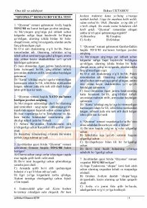

BAChingiz Aytmatovning «Qiyomat» romani bo'yicha test savollari va tahlili.
Ushbu qo'llanma Chingiz Aytmatovning «Qiyomat» romani va boshqa badiiy asarlar bo'yicha tuzilgan test savollarini o'z ichiga oladi. Testlar kitobxonlarning asar mazmuni, qahramonlari va voqealar rivojini qay darajada o'zlashtirganini tekshirish uchun mo'ljallangan.